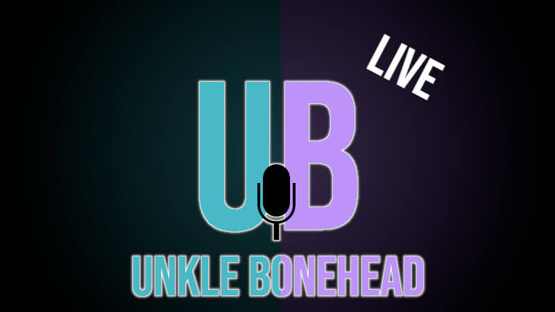
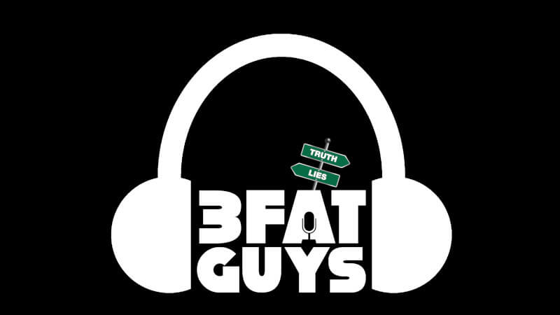

I'm a life long truck driver by trade but I've also been a podcaster, internet radio presenter, dad, husband and was even a guitarist for a metal band named Slight Case of Death. Thats probably where you've seen pictures of me with my shirt pulled over my head dancing on a table like a scene out of Coyote Ugly. Yeah, I know the things on the internet are forever. So I own that.
I do a few podcasts alone and with some other people. I dont do things like I used to. Editing things to be super perfect with super high quaility video anymore. Nobody's got time for that and all that extra polish just takes the fun out of shows. So I just stream every show live and put the recordings up for listening at your leisure.
I've found the easiest way for me to do it is to originate all the streams from Rumble using Rumble Studio and let people watch or listen from where they want. The only drawback is that currently the live chat only runs YouTube, Twitch and Rumble together for me to monitor. So to interact on the live stream you need to watch on one of those 3 places.
You can watch me (us) on these platforms random nights from Mon - Fri 7 - 10 pm EST

Streamed random nights between 7pm - 10pm EST or a Sunday afternoon.
This one I try my best to keep it family friendly and keep the trucker mouth at bay. But it doesnt always happen that way. Sometimes I will get fired up pretty hot and heavy over something and that 27 yrs of mouth on the road just rolls faster than an over weight Peterbuilt coming off the top of Donners Pass. I will definitly give a warning if I'm fired up.

Saturday nights starting at 7pm EST and going till it's done. Usually lasts around 2 - 3 hrs. We are close to boomer age so we tire out fast This show I do with Johnny Gearjammer and Radioman. You can bet that every episode of this show is classified as NSFW. The 3 of us proudly proclaim that we are Equal Opportunity Offenders. So, you best wear your ear buds or dont play it at work. You have been warned.
We cover funny, weird af news along with some supposedly "unpopular" political opinion.
Keith is the former owner/operator of 4 large internet radio stations that covered most genres. In his semi retirement he still maintains a podcast whenever he gets to it. You can find it on Bitchue and CastGarden
My (nearly) life long best friend and musical soul mate John Sisler has seen me through some pretty dark times in my life and believe me when I say he is my brother from another mother it is true. He is one of the founding members of Slight Case of Death, a fellow life long truck driver, a dad and has one of the most wicked sense of humour I've ever seen.
Site design heavily inspired by Let's Decentralize
Which was made with <3 by your friends at Dead End Shrine Online.
The best philosphy to live by: "Don't be a dick!"